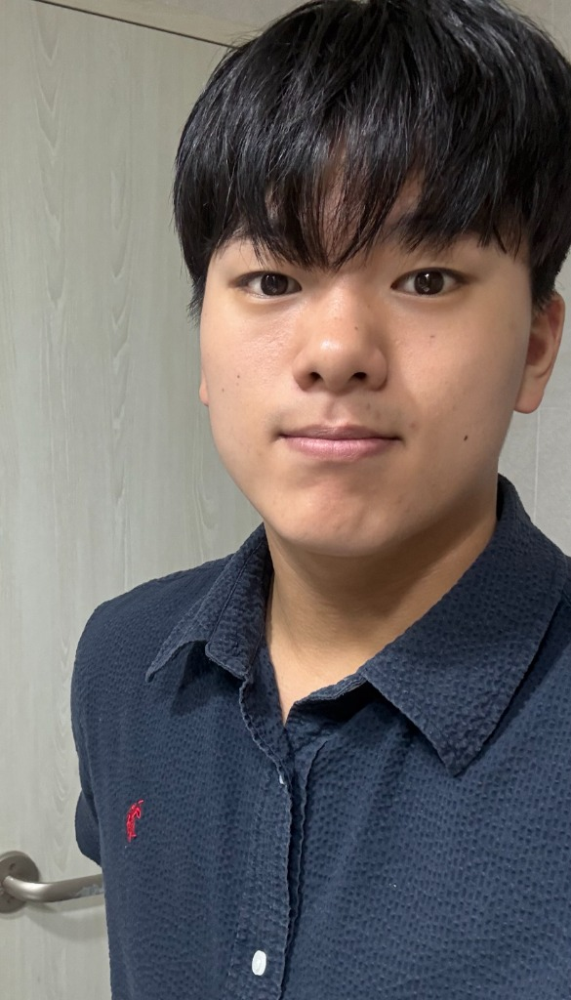

1. 기본 프로필

- 이름
- 백한결
- MBTI
- ENFJ (정의로운 주인공 & 따뜻한 열정가)
- 주요 관심사
- 스포츠 활동, 음악 활동, 영화 및 드라마 감상
- 인생의 모토 / 꿈
- 의미 있는 일을 하면서 행복하게 살아가기
- 관심 진로
- 체육 교육과
2. 내가 좋아하는 것들
다양한 활동을 즐기며 하루하루를 알차고 즐겁게 보내려고 합니다.
⚽ 스포츠 활동
- 몸을 움직이고 땀을 흘리며 에너지를 발산하는 시간을 가장 좋아합니다.
- 친구들과 팀을 짜서 함께 땀 흘리고 협동하는 스포츠는 언제나 환영입니다!
- 꾸준한 운동을 통해 체력도 기르고 긍정적인 활력을 얻고 있습니다.
🎵 음악 활동
- 기분에 따라 다양한 장르의 음악을 찾아 듣는 것을 즐깁니다.
- 좋은 음악을 들으면 스트레스도 풀리고 집중도 더 잘 되는 편입니다.
- 노래를 부르거나 악기를 다루는 등 음악과 함께하는 모든 활동을 좋아합니다.
🎬 영화 & 드라마 보기
- 여유가 생길 때마다 명작 영화나 재미있는 드라마를 몰아보는 것을 좋아합니다.
- 몰입감 넘치는 스토리를 보고 난 후, 친구들과 인상 깊었던 장면이나 소감을 나누는 것도 큰 즐거움입니다.
- 좋은 작품이 있다면 언제든 추천해 주세요!
3. 나의 꿈과 가치관
"의미 있는 일을 하면서 행복하게 살아가기"
단순히 성공만을 좇기보다는, 나 자신에게 보람차고 다른 사람들에게도 긍정적인 영향을 줄 수 있는 일을 하고 싶습니다.
매일 작은 행복을 발견하고, 소중한 사람들과 의미 있는 순간들을 함께 채워나가는 것이 제가 바라는 인생의 모습입니다.
4. 요즘 생각하는 진로: 체육 교육과
요즘에는 저의 특기와 관심사를 살려 체육 교육과 쪽 진로를 진지하게 고민하고 있습니다.
체육 교육과를 생각하게 된 이유
- 좋아하는 분야와의 일치: 평소 가장 즐기는 스포츠 활동을 전문적으로 배우고 실천할 수 있습니다.
- 의미 있는 일: 학생들에게 건강한 신체 활동의 기쁨을 알려주고, 바른 인성과 체력을 기를 수 있도록 돕는 교육자라는 직업이 가치 있게 느껴집니다.
- 행복한 삶: 좋아하는 스포츠와 보람찬 교육을 함께할 수 있어 제 꿈인 '의미 있는 일을 하며 행복하게 살기'와 잘 맞닿아 있습니다.
5. 친구들에게 전하는 말
함께 운동하고 싶거나, 좋은 음악이나 영화를 추천해주고 싶은 친구는 언제든 편하게 말 걸어줘!
앞으로도 서로 응원하며 즐거운 추억 많이 만들자 😊